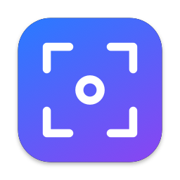

GlimpseGlimpse captures, marks up, hands off and keeps what is on your Mac, for the people you work with and for your AI coding agent. The whole product is on the map below. Click any tile.
Each step is a key or two, and each one hands to the next. A capture waits in the corner, opens in the editor, goes to a person or an agent, and lands in the recent stack.
Your agent can travel the same roads. Through MCP it can capture, read, record and draw, and it shows up in your stack in its own colour.
curl -fsSL https://raw.githubusercontent.com/miladbeigi/glimpse/master/install.sh | bashclaude mcp add glimpse -- /Applications/Glimpse.app/Contents/MacOS/Glimpse mcp